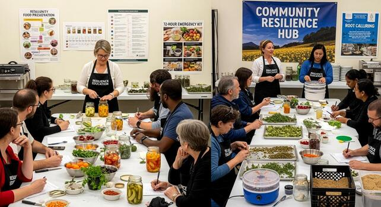

Community Food Preservation Initiative

Preserve food. Empower communities.
Food preservation turns today’s abundance into tomorrow’s security. By learning simple, reliable methods, families reduce waste, stretch budgets, and keep nutritious meals on the table year‑round. When communities share preservation skills, resilience grows: knowledge circulates, costs drop, and local harvests feed more people for longer.
Why Preservation Matters
Fresh produce is precious—and often short‑lived. Techniques like fermentation, drying, and canning protect vitamins, stabilize shelf life, and keep flavor at its peak. With a few tools and trusted steps, anyone can safely preserve fruits, vegetables, and staples at home.
Preserving extends food life, shields nutrition, and reduces the cost of spoilage for households and community programs.
Community Benefits
This initiative is practical and communal. We teach hands‑on methods, offer workshops, and celebrate local wisdom. Shared skills build confidence and connection. Neighborhoods become more self‑reliant, and seasonal harvests serve people beyond their brief peak.
